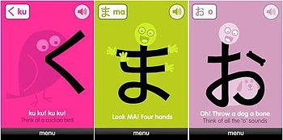

Designing for a startup helping refugees
NaTakallam connects multilingual refugees with language learners through a video conferencing.
We are facing the worst refugee crisis in history.
65 Million children, women, and families have been displaced in Asia, Africa and the Middle East
A desire to help led me to volunteer at NaTakallam, where I was to help the young startup with graphics.
Mapping the Arabic Dialects
With over 11 different dialects, Arabic is a notoriously difficult language to learn. In this project I was assigned to design a map of Africa and the Middle East showcasing the diversity of the language.
Since this poster was to be distributed on Facebook where a diverse range of people can view it,
"I knew I had to design something that was accessible for everyone."
The map includes enough of a range that a linguist can be satisfied the map is accurate, but also a broad enough range that newcomers can still find a dialect of Arabic most relevant to them.
I also designed the new logo found on the bottom right. I incorporated a blend of the old logo elements (the Arabic calligraphy and English typography), and added new elements such as the Earth, to emphasize the common humanity we all share.
Designing Social Media Engagement
My next assignment for NaTakallam was to create educational materials for distribution on social media. These graphics were aimed to give potential NaTakallam users a taste of the joy of language learning.
In researching how other applications approached teaching difficult languages - mnemonics stood out as a learning device.
I decided that to make Arabic learning less intimidating, the first place to start had to be the alphabet. With this in mind, I set out to design fun mnemonic images that taught the first few letters of the Arabic alphabet. Doing so opens the doors to later on posting basic words, and creates an excitement for our users to continue language learning.